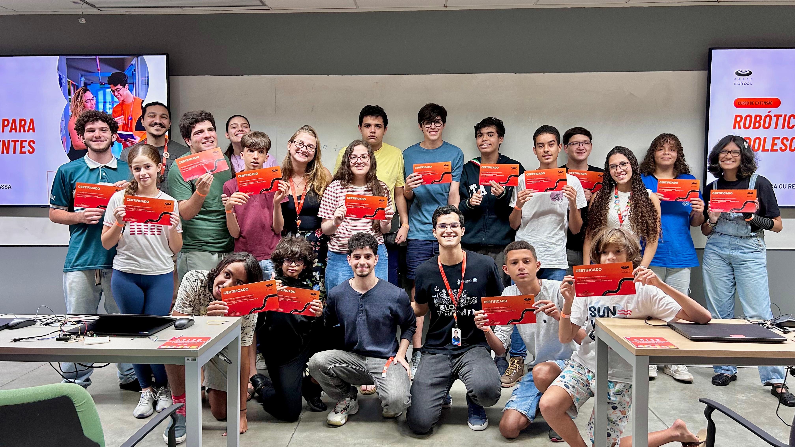
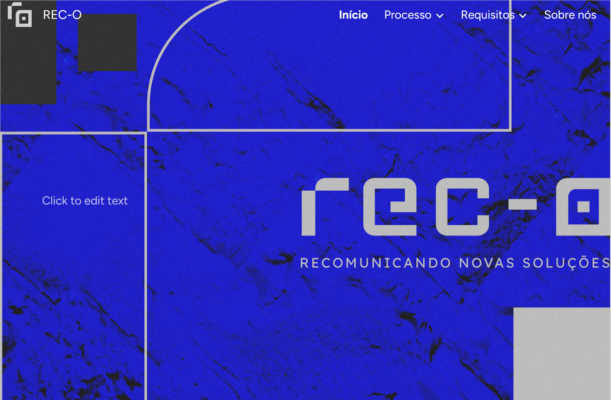

Projetos em Destaque


Brasilino: Inclusão Digital
Atuação como educador de lógica de programação para crianças e adolescentes neurodivergentes, adaptando metodologias de ensino.

Jornal do Commercio REC.O
Projeto desenvolvido em Python, com a framework Django para resolver pontos de atrito na experiência do usuário, como a jornada longa até o conteúdo desejado e um layout pouco convidativo.
Outros Projetos
Arkanoid C
Projeto final da disciplina de Programação Imperativa e Funcional (2025.2). Um clone moderno do clássico Arkanoid desenvolvido em C puro utilizando a biblioteca Raylib.
Projeto SEBRAE (Matriz CSD)
Análise de requisitos e levantamento de dados utilizando Matriz CSD para identificar certezas, suposições e dúvidas de um problema real.
Protótipo de Jogo Mobile
Jogo 2D em desenvolvimento focado em mecânicas casuais. Implementação de física, UI e scripts de controle de personagem.